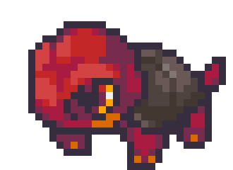
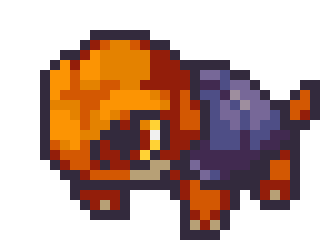
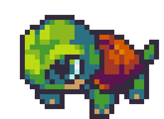

| ← #003 ??? | #004 Toruga | #005 Embaval → |
|---|
| Normal Form | Corodex Description | Type |
|---|---|---|
|  | Toruga had to adapt by growing stronger jaws since their head grew too big to fit its shell. |  |
| Potent Form | Locations Data | Evolution Line |
|  | Starter Coromon from Professor Larch at the Coromon Lab. | - Toruga - Embaval (Level 18) - ??? (Level ???) |
| Perfect Form | Traits | |
|  | - Vegetarian (30/70) - Thick Skin (40/70) |
| Stats | |
|---|---|
| HP | 55 |
| Attack | 30 |
| Defense | 27 |
| Sp. Attack | 35 |
| Sp. Defense | 30 |
| Speed | 37 |
| Skill set | |
|---|---|
| Level 1 | Slam |
| Level 3 | Cute Pose |
| Level 6 | Cinder |
| Level 12 | Toughen Up |
| Level 17 | Boulder Barrage |
| Level 22 | Smokescreen |